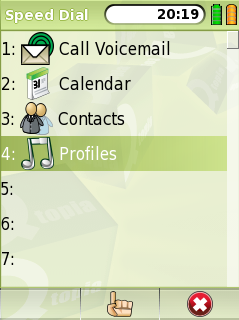

|
Home · All Namespaces · All Classes · Grouped Classes · Modules · Functions | |
The QSpeedDial class provides access to the Speed Dial settings. More...
#include <QSpeedDial>
The QSpeedDial class provides access to the Speed Dial settings.
The QSpeedDial class includes a set of static functions that give access to the Speed Dial settings. This class should not be instantiated.
The Speed Dial actions are actions from the Favorite Services, with an associated input for faster access.
The input range is from 1 to 99. To allow the user to select an input for a given action, use addWithDialog().

To directly modify the Speed Dial settings, use remove() and set(). Use find() to retrieve the assigned action for a given input or position.
See also QSpeedDialList and QFavoriteServicesModel.
Provides a dialog that allows the user to select an input for action action, using label and icon as the display label and icon respectively. The dialog has the given parent.
Returns the input that the user selected, and also assigns the input to the action.
If the user cancels the dialog, a null string is returned.
See also set().
Returns a list of the currently assigned Speed Dial inputs.
This function was introduced in Qtopia 4.3.
See also possibleInputs().
Returns a QtopiaServiceDescription for the given Speed Dial input. If the input is not assigned, returns 0. The caller must not delete the QtopiaServiceDescription returned, nor rely on pointer validity after subsequent calls to QSpeedDial::find().
Returns a list of possible Speed Dial inputs, some of which may be assigned already.
This function was introduced in Qtopia 4.3.
See also assignedInputs().
Removes the action currently associated with the given Speed Dial input. If the action is in the favorites list, it will be deleted from there as well.
Provides a dialog that allows the user to select an existing speed dial item. The dialog has the given parent.
Similar to selectServiceWithDialog(), but returns the speed dial input selected instead of the service.
If the user cancels the dialog, a null pointer is returned.
Assigns the given QtopiaServiceDescription, r, as the action to perform when the given Speed Dial input, is detected. Will remove any previous services assigned to that input from the Speed Dial.
| Copyright © 2009 Trolltech | Trademarks | Qt Extended 4.4.3 |